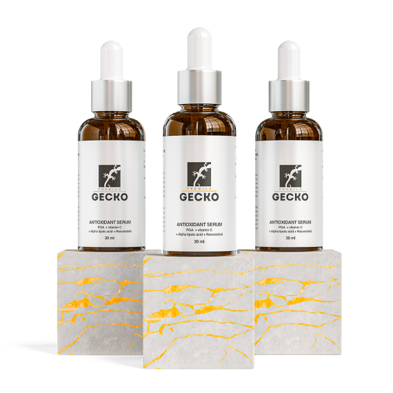

ANTIOXIDANT SERUM
Гелеобразная сыворотка. Не содержит масел
и жиров, имеет лёгкую, воздушную консистенцию.
и жиров, имеет лёгкую, воздушную консистенцию.
Состав:
Aqua, Magnesium Ascorbyl Phosphate,
Dimethyl Isosorbide, Betaine,
Sodium Acrylates Copolymer, Lecithin,
Polyglutamic Acid, Alpha Lipoic Acid,
Polyglyceryl-4 Laurate/Sebacate,
Polyglyceryl-6 Caprylale/Caprate,
Resveratrol, Isopentyldiol,
Phenoxyethanol, Ethylhexylglycerin,
Ferulic acid, Parfum.
Подробнее про активные компоненты:
 @@include('show_more_popup.html')
@@include('show_more_popup.html')